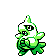
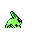

#169
Larvitar
RockGround
Born underground, it eats mountains for years to grow. It emerges only once it is larger.
Base stats Total 255
HP50
Attack64
Defense50
Speed41
Special50
Evolution
Pokédex data
- Species
- Rock Skin Pokémon
- Height
- 2'00"
- Weight
- 158.8 lb
- Catch rate
- 45 / 255
- Base experience
- 67
- Growth rate
- Slow
Level-up moves 8
LevelMoveTypePowerAcc.PP
TM / HM moves 13
TM / HMMoveTypePowerAcc.PP